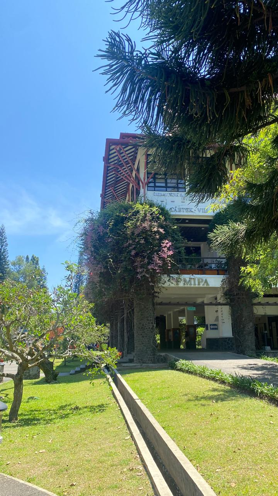

Indah Ramadhani
UTS II-2100 KIPP
Author: 18224037 Indah Ramadhani
Published: Oktober 19, 2025
Welcome!
Halo, semuanyaa! Website ini aku buat sebagai bagian dari mata kuliah II-2100 Komunikasi dan Interpersonal Publik, dari program studi Sistem dan Teknologi Informasi, Institut Teknologi Bandung (ITB).
Melalui halaman ini, aku ingin berbagi perjalanan belajar dan refleksi pribadi tentang bagaimana komunikasi bukan hanya soal berbicara, tapi juga tentang understanding, connection, dan growth.
Untuk aku, komunikasi yang baik bukan hanya membuat orang lain paham apa yang kita maksud, tetapi juga membuat kita lebih mengenal diri sendiri.
UTS-1 All About Me
1.1 Kisah yang Membentuk Diri Anda: Mengenal Kekuatan Identitas Naratif
Manusia adalah pencerita alami. Sejak zaman dahulu, kita selalu berusaha memahami kekacauan hidup dengan merangkainya menjadi sebuah cerita.
UTS-2 My Songs for You
Musik adalah bahasa emosi yang universal.
- What a Wonderful World – Louis Armstrong
- Fix You – Coldplay
- Fight Song – Rachel Platten
UTS-3 My Stories for You
Setiap pengalaman hidup adalah cerita. Di sini saya menulis kisah-kisah kecil yang mengajarkan makna tentang perjuangan, kebersyukuran, dan harapan.
UTS-4 My SHAPE
SHAPE adalah akronim dari Spiritual Gifts, Heart, Abilities, Personality, dan Experiences.
UTS-5 My Personal Reviews
Pada bagian ini saya merefleksikan pembelajaran yang sudah dijalani selama proses asesmen berlangsung.
Summary
Kesimpulan dari keseluruhan asesmen, menyoroti pembelajaran utama dan arah pengembangan selanjutnya.
References
1. Covey, S. (1989). The 7 Habits of Highly Effective People.
2. Frankl, V. (1946). Man’s Search for Meaning.